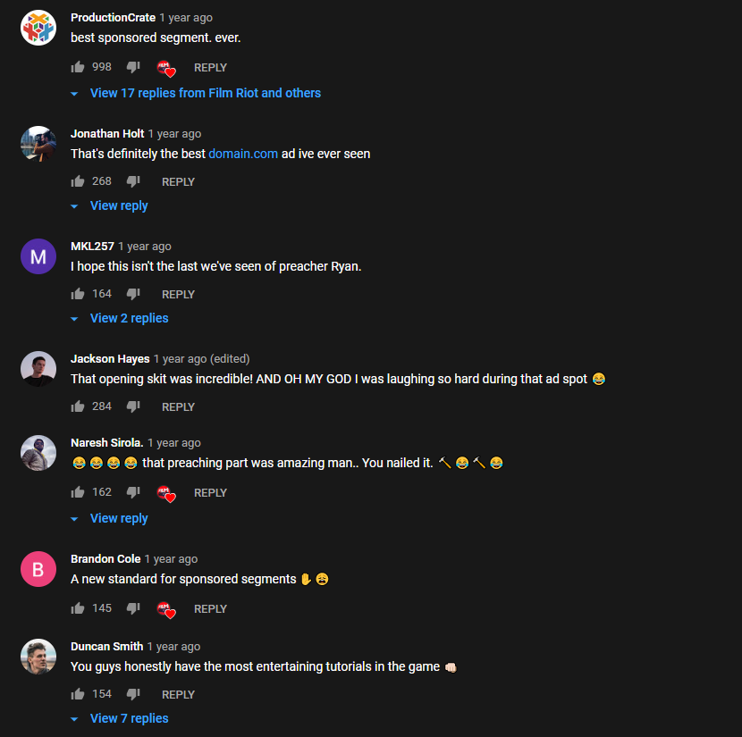

Brainstorming
Ik probeer dit leerdoel aan te tonen door het genereren van ideeën voor het concept en deze vervolgens te visualiseren en uit te testen.
Brainstorm
Met welke 'brainstorm' methodes ben ik tot onderstaande ideeën gekomen?
Brainwriting
Ieder groepslid heeft individueel gezocht naar oplossingen op de Design Challenge. Doordat niet in groepsverband is gebrainstormed zijn elkaars zichten/creativiteit niet beperkt. Als een projectlid namelijk een idee deelt voordat de anderen leden zelf iets hebben bedacht, blijft dat idee in je hoofd zitten en wordt het moeilijker met een ander idee te komen. Met brainwriting voorkom je dit. Zelf kom ik altijd met ideeën door eerst marktonderzoek te doen. Ik heb gezocht naar websites die gepersonaliseerde advertenties laten zien aan de gebruiker. Bij elke website heb ik gekeken naar de voordelen en nadelen van hun concept. Vervolgens heb ik de voordelen van één website gecombineerd met de voordelen van een andere website.
Idee 1
Ik heb bijgedragen aan het concept door het idee van tutorials, skits en storyline advertising
video’s op te brengen.
Uitleg
SolidSight probeert advertenties te tonen aan gebruikers zonder dat zij dit zien als advertenties. Reviews video’s van producten zijn hier een voorbeeld van. Een probleem in het SolidSight concept was dat niet elk product of dienst gereviewed kan worden. Denk bijvoorbeeld aan toiletpapier of een levensverzekering. Met een humoristische skit kan toiletpapier of een levensverzekering wel geadverteerd worden en tegelijkertijd de gebruiker vermaken. Zo kan elke onderneming hun producten/diensten adverteren op een gebruiksvriendelijke manier.Onderzoek
Mijn inspiratie kreeg ik uit één van mijn hobby's: namelijk het bekijken van YouTube video's. Een van de kanalen waar ik op geabonneerd ben, heeft een gesponsord fragment gestopt in een video. In het fragment verteld de presentator over de sponsor op een manier zoals een prediker spreekt.

De kijkers waren erg enthousiast/vermaakt. Het blijkt dus dat men graag naar advertenties kijkt zolang dit maar op een vermakende manier gebeurd.
Visuals

Tone of voice
Er wordt geprobeerd een 'bioscoop' gevoel te creeëren om de gebruiker het gevoel te geven dat ze iets leuks gaan kijken. Dit wordt bereikt door een donkere achtergrond te gebruiken, een blauwe kleur die veel wordt gebruikt in thumbnails van films en een sidemenu dat niet veel ruimte inneemt waardoor de gebruiker vooral gefocust is op de video. Op de eerste pagina bovenaan zie je een 'About' sectie (je kunt binnen het prototype naar beneden scrollen). In de 'About' sectie wordt geprobeerd over te brengen aan de gebruiker dat de gebruiker op de webapp volledige controle heeft over zijn/haar privacy. Dit wordt bereikt door te sympathiseren met de gebruiker op een informele, humoristische manier.
Iteraties
Ik heb wijzigingen aangebracht aan het prototype nadat ik feedback van docenten en medestudenten
had gekregen.
De eerste feedback die ik kreeg, was dat het contrast tussen de witte tekst op de zwarte
achtergrond te hoog was.
Daarom heb ik een minder donkere kleur gebruikt op verschillende plekken.

De tweede opmerking die ik kreeg was dat de rode kleur teveel doet denken aan Netflix en YouTube.
Ik besloot daarom voor een andere hoofdkleur te gaan. Dit vond ik echter wel lastig te bepalen
aangezien
ik het 'bioscoop' gevoel wilde bewaren. Uiteindelijk ben ik met een blauwe kleur gegaan, omdat dit
een
goed contrast geeft en de kleur veel wordt gebruikt in de thumbnails van films.
Idee 2
Nog een idee van mij is het toevoegen van een upload pagina voor de content creators die zorgen voor de video content op SolidSight.
Uitleg
Het is essentieel een upload pagina te ontwikkelen. Als dit namelijk niet gebeurd, kunnen de content
creators geen video's leveren en
zal het concept niet werken.
Onderzoek
Toen ik met de opdrachtgever ging sparren, bleek dat het concept geen rekening hield met de content creators. Er is toen besloten content creators te betrekken door ze video's te laten uploaden op de SolidSight website. Uiteraard vereist dit een plaats op de website waar zij de video's kunnen uploaden.
Visuals

Reflectie
Het genereren van bovenstaande ideeën ging goed doordat ik gespard heb met de opdrachtgever. De opdrachtgever legde namelijk uit met welke partijen Greenhouse Group rekening moest houden. Doordat ik wist met wie ik rekening moest houden, heb ik het concept kunnen verbeteren met bovenstaande ideeën. Wat beter kon, is het goed overbrengen van deze ideeën aan de opdrachtgever. De opdrachtgever vond het soms niet duidelijk wat ons concept inhield. Ik dacht dat mijn ontwerpkeuzes in het tweede prototype (zie de visuals hierboven) goed beredeneerd waren, maar nadat een docent als feedback had gegeven dat de stijl teveel lijkt op de stijl van concurrenten (Netflix, Youtube) bleken een aantal ontwerpkeuzes toch niet allemaal goed te zijn. In mijn Executie opdrachten heb ik hier rekening mee gehouden door eerst de concurrentie's stijl eens goed te bekijken om vervolgens een stijl te creeëren die verschilt van de concurrentie.


 Uiteindelijk resultaat
Uiteindelijk resultaat
 Introductie tot SolidSight
Introductie tot SolidSight